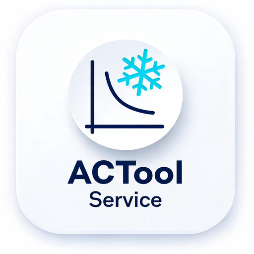

Approach • Superheat • Subcool • COP • Calibration • ตาราง P–T
Approach = อุณหภูมิควบแน่นอิ่มตัว (SCT) − อุณหภูมิน้ำด้านออกจากคอนเดนเซอร์ (LCWT)
เกณฑ์ทั่วไปคอนเดนเซอร์ระบายความร้อนด้วยน้ำ: Approach 2–6°C — ค่าที่สูงกว่านี้มักบ่งชี้คอนเดนเซอร์สกปรก/มีตะกรัน น้ำยาล้น หรือมีก๊าซไม่ควบแน่น (non-condensable) ปนในระบบ
Approach = อุณหภูมิควบแน่นอิ่มตัว (SCT) − อุณหภูมิอากาศเข้าคอนเดนเซอร์
เกณฑ์ทั่วไปคอนเดนเซอร์ระบายความร้อนด้วยอากาศ: Approach 8–16°C — ค่าที่สูงกว่านี้มักบ่งชี้ครีบคอยล์อุดตัน ลมผ่านคอยล์ไม่พอ พัดลมมีปัญหา หรือน้ำยาล้นเกิน
Approach = อุณหภูมิอ้างอิง (น้ำเย็นออก / ลมเข้าคอยล์) − อุณหภูมิระเหยอิ่มตัว (SST)
เกณฑ์ทั่วไปของ Chiller น้ำเย็น: Approach 2–6°C ค่าที่สูงขึ้นมักบ่งชี้ท่อคอยล์ระเหยสกปรก/มีตะกรัน หรือน้ำยาไม่พอ
แปลงความดันอิ่มตัว ↔ อุณหภูมิอิ่มตัว ของน้ำยาแอร์แต่ละชนิด พร้อมตารางอ้างอิง
ค่าที่คำนวณใช้การประมาณเส้นโค้งความดันไอแบบ Clausius–Clapeyron จากจุดข้อมูลมาตรฐาน ใช้อ้างอิงภาคสนาม งานที่ต้องการความแม่นยำสูงควรตรวจสอบกับ P–T chart ของผู้ผลิตหรือมาตรวัดที่สอบเทียบแล้ว
หมายเหตุ: สารผสม zeotropic (เช่น R-407C, R-404A) เครื่องมือนี้ใช้เส้นโค้ง Bubble และ Dew แยกกันตามหลักที่ถูกต้อง — Superheat อ้างอิง Dew point, Subcool อ้างอิง Bubble point
Superheat = อุณหภูมิท่อ Suction ที่วัดได้จริง − อุณหภูมิระเหยอิ่มตัว (Dew Point)
ค่าอ้างอิงทั่วไปของ Total Superheat (วัดที่ท่อ Suction ใกล้คอมเพรสเซอร์ ตามที่เครื่องมือนี้คำนวณ): ราว 4–10°C — ค่าจริงขึ้นกับชนิดวาล์ว/สเปคผู้ผลิต ควรอ้างอิงคู่มือเครื่องเป็นหลัก
หมายเหตุ: Superheat ที่วัดเฉพาะกระเปาะ TXV (ไม่รวมท่อ suction line) มักต่ำกว่านี้ ราว 4–8°C
Subcool = อุณหภูมิควบแน่นอิ่มตัว (Bubble Point) − อุณหภูมิท่อน้ำยาเหลวที่วัดได้จริง
ค่าอ้างอิงทั่วไป: Subcooling ราว 4–8°C สำหรับระบบ TXV — ต่ำเกินไปอาจบ่งชี้น้ำยาไม่พอ/มีการรั่ว สูงเกินไปอาจบ่งชี้น้ำยาล้นหรือตัวกรองอุดตัน
คำนวณคุณสมบัติของอากาศชื้นและภาระการทำความเย็นฝั่งลม (air-side) โดยอ้างอิงความดันบรรยากาศมาตรฐาน 101.325 kPa (ระดับน้ำทะเล) — หากติดตั้งที่ความสูงมาก ค่าจะคลาดเคลื่อนเล็กน้อย
ใช้สมการ Magnus/ASHRAE โดยประมาณ (รองรับทั้งเหนือน้ำและเหนือน้ำแข็ง จึงใช้ได้กับห้องเย็น/ฟรีซเซอร์) — งานที่ต้องการความละเอียดสูงควรใช้ตาราง psychrometric chart มาตรฐาน
ใช้เมื่อทราบค่า Enthalpy ของอากาศเข้า/ออกอยู่แล้ว (เช่น อ่านจาก psychrometric chart หรือจากหัวข้อ "คุณสมบัติของอากาศ" ด้านบน) — ความหนาแน่นอากาศมาตรฐานที่ใช้แปลงอัตราการไหลคือ 1.202 kg/m³
SHF (Sensible Heat Factor) ทั่วไปของระบบปรับอากาศสำนักงาน/ที่พักอาศัยอยู่ราว 0.7–0.85 — ค่าต่ำกว่านี้บ่งชี้ภาระความชื้นแฝง (latent) สูง เช่น พื้นที่คนเยอะหรือมีความชื้นภายนอกสูง
คำนวณ TR / kW ฝั่งน้ำ (water-side) และฝั่งลม (air-side) พร้อมอัตราการไหลของอากาศ, ACH, COP/ประสิทธิภาพ และ Compression Ratio — ใช้ตรวจสอบโหลดจริงเทียบสเปกเครื่อง
สูตร: Q(kW) = Flow(L/s) × 4.186 × ΔT(°C) • 1 TR = 3.5168 kW • ใช้ค่าคุณสมบัติของน้ำล้วน หากใช้ไกลคอลผสมควรปรับ Specific Heat ตามความเข้มข้นจริง
วัดความเร็วลมด้วย anemometer ที่กึ่งกลางหน้าตัดท่อ (หรือค่าเฉลี่ยหลายจุดตาม traverse method เพื่อความแม่นยำ) — ความเร็วลมในท่อจ่ายทั่วไปมักออกแบบไว้ราว 3–8 m/s
ค่าอ้างอิงทั่วไป: ห้องพักอาศัย 4–6 ACH • สำนักงาน 6–8 ACH • ห้องผ่าตัด/คลีนรูม 15–25+ ACH — ขึ้นกับมาตรฐานและการใช้งานพื้นที่จริง
คำนวณจากคุณสมบัติอากาศเข้า/ออกโดยประมาณ (สมการ Magnus/ASHRAE) — ดูรายละเอียดคุณสมบัติอากาศแต่ละจุดเพิ่มเติมได้ในแท็บ Psychrometric
COPheating = COPcooling + 1 • EER = COP × 3.412 • kW/ton = 3.5168 / COP
อ้างอิงคร่าว ๆ (Full load): Air-cooled chiller COP ~2.7–3.5 (1.0–1.3 kW/ton) • Water-cooled screw ~4.5–5.8 (0.60–0.78 kW/ton) • Water-cooled centrifugal ~5.8–7.0 (0.50–0.60 kW/ton)
หากป้อน SST/SCT จะคำนวณ Carnot COP และ % ของ Carnot (Second-law efficiency) ให้ด้วย — ค่าปกติของชิลเลอร์จริงอยู่ราว 40–60% ของ Carnot
อ้างอิงคร่าว ๆ: ลูกสูบ/สกรอลล์ CR ~2.5–5 • สกรู ~2–4 • ค่าที่สูงผิดปกติอาจบ่งชี้คอนเดนเซอร์ระบายความร้อนไม่ดี ลมเย็นไม่พอ หรือวาล์ว/ตัวกรองมีปัญหา
แปลงสัญญาณอนาล็อก 4–20 mA / 0–10 V และเทียบสเกลเซนเซอร์วัดอุณหภูมิ RTD (Pt100/Pt1000) และ NTC Thermistor
สูตรที่ใช้: PV = LRV + (I − 4)/16 × (URV − LRV) | I = 4 + 16 × (PV − LRV)/(URV − LRV)
NAMUR NE43: < 3.6 mA = สัญญาณขาด/เซนเซอร์เสีย • 3.6–3.8 mA = ต่ำกว่าช่วงใช้งาน • 20.5–21.0 mA = เกินช่วง • > 21 mA = ผิดปกติ/ลัดวงจร
ตารางสอบเทียบ 5 จุด (0/25/50/75/100%) เป็นมาตรฐานการตรวจ linearity — ยอมรับได้ทั่วไปที่ ±0.5 %FS สำหรับเซนเซอร์อุตสาหกรรม
เคล็ดลับ: สัญญาณ 1–5 V มักเกิดจาก 4–20 mA ผ่านตัวต้านทาน 250 Ω จึงเทียบสเกลได้เหมือนกันทุกประการ
สมการ Callendar-Van Dusen ตามมาตรฐาน IEC 60751 / DIN EN 60751 (α = 0.0038515):
T ≥ 0°C: R(T) = R₀ (1 + AT + BT²)
T < 0°C: R(T) = R₀ [1 + AT + BT² + C(T−100)T³]
โดย A = 3.9083×10⁻³ °C⁻¹, B = −5.775×10⁻⁷ °C⁻², C = −4.183×10⁻¹² °C⁻⁴ (เฉพาะช่วง T<0)
ช่วงใช้งานมาตรฐานของ Pt100/Pt1000 (Class B ทั่วไป): −200 ถึง 850 °C — นอกช่วงนี้ค่าที่ได้เป็นการประมาณค่านอกช่วงเท่านั้น
สมการ Beta: 1/T = 1/T₀ + (1/β)·ln(R/R₀) (T, T₀ ในหน่วยเคลวิน)
ค่า β ทั่วไปของ NTC ที่ใช้ในเครื่องปรับอากาศ/ตู้เย็นอยู่ราว 3000–4500 K — ควรตรวจสอบสเปกจากผู้ผลิตเซนเซอร์ที่ใช้จริงเสมอ เนื่องจากสมการ Beta เป็นการประมาณค่าที่แม่นยำเฉพาะช่วงใกล้ T₀ เท่านั้น หากต้องการความแม่นยำสูงในช่วงกว้างควรใช้สมการ Steinhart-Hart แทน
ตัวแปลงหน่วยที่ใช้บ่อยหน้างาน — อุณหภูมิ, อัตราการไหล, กำลัง/ภาระความเย็น และความดัน
บันทึกค่าที่วัดได้ระหว่างตรวจเช็คเครื่อง เพื่อเทียบย้อนหลังในการเข้างานครั้งถัดไป